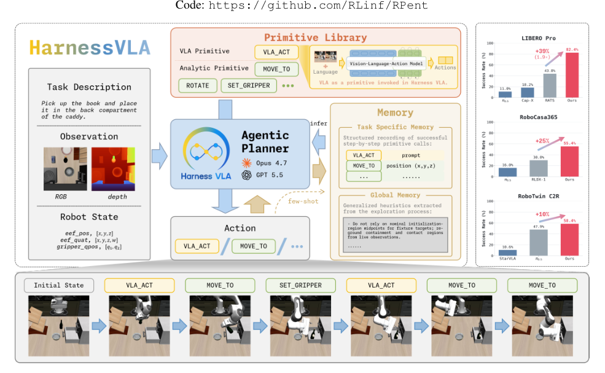

Figure 1
Harness VLA: Steering Frozen VLAs into Reliable Manipulation Primitives via Memory-Guided Agents
Harness VLA：用记忆引导智能体把冻结 VLA 组织成可靠操作原语
HarnessVLA 的任务分解、技能调用和反馈控制结构。来源：原论文 Figure 1（PDF 第 1 页）。

Harness VLA：用记忆引导智能体把冻结 VLA 组织成可靠操作原语
HarnessVLA 的任务分解、技能调用和反馈控制结构。来源：原论文 Figure 1（PDF 第 1 页）。